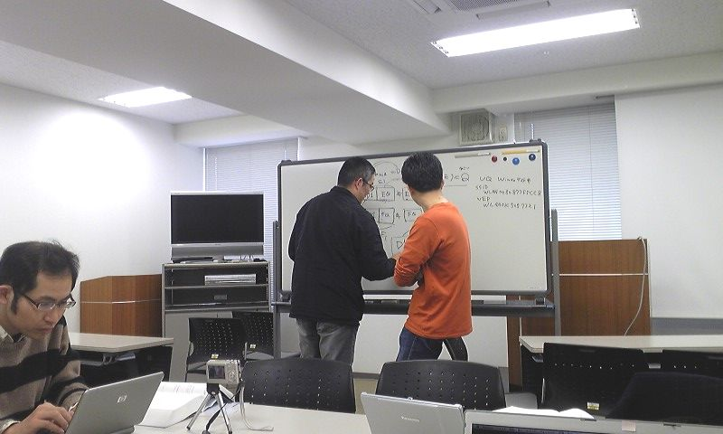

第6回 - オープンラボ岡山
- 修了しました。
?収支報告
参加者 21名（講師5名） [収入] 繰越金 633 参加費 8,000 （一人500円 x 16名 講師から参加費をとっていません。） 懇親会費 56,000 （一人3,500円 x 16名） ------------------------- 収入合計：64,633 [支出] 「ゆうあいセンター」研修室１ 3,900（終日。プロジェクタ700円含む） 懇親会費 52,425 ------------------------- 支出合計：56,325 --------------------------------------- 収入合計ー支出合計：8,308 ※現金過不足が510円発生しました。 繰越金：7,798（8,308 - 510）
?開催風景
ガウディ本読書会

英吉さん
lopes_nbさん
twingoさん
増田さん（資料：olo6masudakz.pdf(2871)）
toshさん
?参加申し込み方法
http://utage.org/enkai/menu.cgi?ENKAI_CODE=okayama20100220
?詳細
オープンラボ岡山 オープンラボ岡山とは、岡山周辺の技術者のための勉強会プラットフォームとして、 勉強会や読書会の場を提供するための組織です。勉強会や読書会を開催したい方、 参加したい方が簡単に集まることの出来る場にしたいと考えています。運営委員は 全員ボランティアで、それぞれが勉強会や読書会の主催者でもあります。興味のあ る方は是非とも一緒にやりましょう。 ■名称： 第6回 オープンラボ岡山 ■参加申し込み方法 http://utage.org/enkai/menu.cgi?ENKAI_CODE=okayama20100220 ■参加費： 500円 ■開催日時： 2010年2月20日（土曜日） 13:00～18:00 ■開催場所： きらめきプラザ（２階の「ゆうあいセンター」研修室１） http://www.kirameki-plz.com/gaiyou.html ■主催: オープンラボ岡山 実行委員会 ■共催： 岡山Javaユーザ会( http://java.okaya.ma/ ) 瀬戸内Linuxユーザ会（ http://www.stlug.org/ ) LinuxKernelHackJAPAN( http://hira-consulting.com/wiki ) オープンセミナー＠岡山実行委員会( http://openseminar.okaya.ma/ ) 日本PostgreSQLユーザ会 中国支部( http://www.postgresql.jp/ ) ■懇親会（任意）： 居酒屋土間土間 4000円程度を予定 http://www.e-map.ne.jp/pc/index.htm?cid=domadoma&kid=0186102 ---------------------------------------------------------------------- 【タイトル】自己紹介タイム 【発表時間】20分 【タイトル】AndroidからGAEのサービスを利用してみた。 【発表者名】英吉さん 【発表時間】20分 【概要】 認証が必要なGoogle App Engineのサービスを作成し、 Androidから接続するまでの調査結果。 【タイトル】Scala入門 【発表者名】lopes_nbさん 【発表時間】20分 【概要】 変態言語 scalaで気持ちよくなれるか？ 【タイトル】「技術的負債」の改善実践経験より 【発表者名】twingoさん 【発表時間】20分 【概要】 開発・運用の現場にいると、様々な「技術的負債」が 積み上げられ、生産性や保守性を下げる要因となって います。開発リーダーとして、これらを改善するため に実践で取り組んできた「ツール・手法」と「マイン ド」についてお話しします。 【タイトル】クラウドの基盤、分散ファイルシステム 【発表者名】増田さん 【発表時間】20分 【概要】 クラウドコンピューティングを支える基盤技術の１つ、 分散ファイルシステムについて話します。取り上げる のはGoogleのGFS論文とHadoopのHDFSです。 【タイトル】ノンデザイナーでもできるDesign 【発表者名】tochiさん 【発表時間】30分 【概要】 デザインが苦手な方でも、４つの基本原則さえ覚えて おけば大丈夫。いつもよりも少しだけカッコ良く。
Copyright(C)2009 オープンラボ岡山運営委員会 All rights reserved.